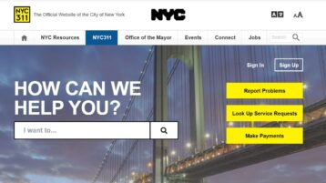
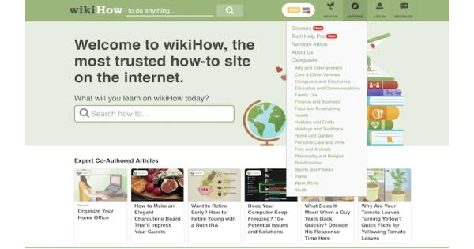

My Projects
Here are some of the projects I have worked on over the years.

NYC 311 Website
During my internship with Nagarro in 2023, I worked with a team of young software engineers from varies different cultures to develop a redesigned version of the NYC 311 website with a strong sense of accessibility. The team's goal was to make the current city services that are offered, easier to navaigate. The improvements we made were simplified navigation, clearer layout structures, and more intuitive user interactions. This experience strengthened my technical skills while also deepening my understanding of inclusive design, showing me how technology can be used to create more equitable access to public resources.
View Project
WIKIHOW Website
During my junior year of high school, I worked with two other classmates on a project where we developed an improved version of wikiHow with better accessibility and usability for young users. Our goal was to make step-by-step instructions easier to understand for a young users. As a team, we redesigned the interface by simplifying navigation, organizing content more clearly, and enhancing the visual structure of each guide. This experience helped me strengthen my collaboration and problem-solving skills while introducing me to the importance of designing technology that is inclusive and user-friendly.
View Project